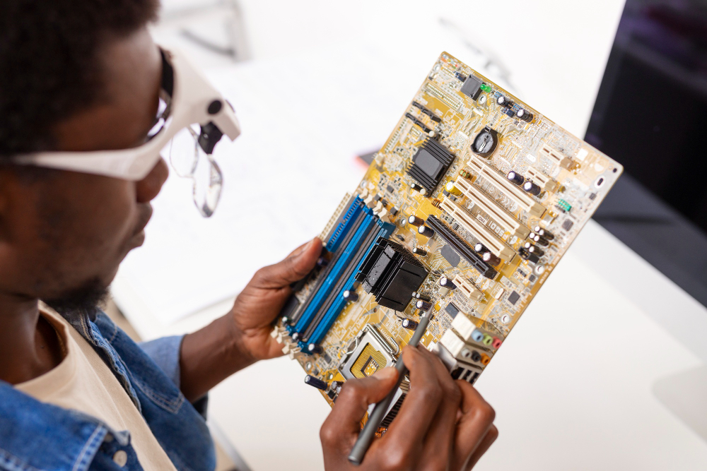

Hello,
Bienvenue au platforme Diangue Tech
Diangue Tech c'est une plateforme qui offre des formation en ligne en differents branches de l'informatique .
Join nowDiangue Tech c'est une plateforme qui offre des formation en ligne en differents branches de l'informatique .
Join nowL’infographiste est « un graphiste en informatique ». Ce métier, lié étroitement aux arts graphiques, consiste en la production, avec l’aide de divers logiciels informatiques, d’images numériques fixes et animées. L’infographiste participe ainsi en collaboration avec d’autres professionnels à la création de dessins animés, de jeux vidéos, de films d’animation en réalisant l’identité visuelle de communication. Toutes les entreprises de multimédia emploient des infographistes. Il peut aussi intervenir dans le domaine de la publicité pour réaliser des retouches photographiques ou aussi dans l’architecture, afin de réaliser des habillages de perspectives de bâtiments en travaillant avec des modeleurs 3D. L’infographiste est un artiste et un illustrateur spécialiste de l’image et de l’informatique. Il doit avoir un esprit créatif et inventif, être curieux, polyvalent et avoir un attrait et une aptitude au travail en équipe. En effet, cet esprit d’équipe permet à l’infographiste de collaborer avec d’autres professionnels (graphiste, directeur artistique, architecte, webmaster, chargé de communication, webdesigner…) afin de réaliser un projet déterminé.
Le développement Web désigne de manière générale les tâches associées au développement de sites Web destinés à être hébergés via un intranet ou Internet. Le processus de développement web comprend, entre autres, la conception de sites web, le développement de contenu web, l’élaboration de scripts côté client ou côté serveur et la configuration de la sécurité du réseau. Le développement Web est le codage ou la programmation qui permet de faire fonctionner un site Web, selon les exigences du propriétaire. Il traite principalement de l’aspect non conceptuel de la création de sites Web, qui comprend le codage et l’écriture du balisage. Le développement Web va de la création de pages en texte brut à des applications Web complexes, des applications de réseaux sociaux et des applications commerciales électroniques. Le développement sur-mesure est très rependu pour répondre aux besoins d’une entreprise. Dans cet article nous examinerons les types de développeurs web, et nous nous pencherons sur le débat entre conception web et développement web. Nous aborderons également certains des langages de programmation les plus populaires pour les développeurs web, notamment Python, JavaScript et HTML.
 La bureautique se définit aussi comme la technique de production et de communication de documents
(textes, audio, images). Les outils bureautiques se classent en trois grandes catégories :
les outils de production de document, tel que le traitement de texte, les tableurs et tous les outils
spécialisés de production basés sur un métier, les outils de communication principalement les logiciels
de courriel, et finalement les outils de conservation tel que les logiciels de gestion documentaire.
Ces trois catégories représentent les surfaces traditionnelles du travail de bureau,
soit la surface de production, les paniers de réception et d'expédition, et finalement les classeurs.
La bureautique se définit aussi comme la technique de production et de communication de documents
(textes, audio, images). Les outils bureautiques se classent en trois grandes catégories :
les outils de production de document, tel que le traitement de texte, les tableurs et tous les outils
spécialisés de production basés sur un métier, les outils de communication principalement les logiciels
de courriel, et finalement les outils de conservation tel que les logiciels de gestion documentaire.
Ces trois catégories représentent les surfaces traditionnelles du travail de bureau,
soit la surface de production, les paniers de réception et d'expédition, et finalement les classeurs.
 La maintenance informatique consiste à assurer le bon fonctionnement d’un système d’information et d’un parc informatique d’une entreprise. Certaines sociétés de maintenance informatique réalisent leur prestation sur le site de l’entreprise ou à distance. Depuis quelques années, des sociétés incluent la téléphonie IP dans leurs services, puisqu’il est à savoir qu’elle est également liée aux systèmes informatiques. BlueBearsIT vous propose un service ponctuel et complémentaire à une DSI interne pour résoudre vos incidents. Cela peut être la mise en place et la mise à jour d’un antivirus, la sauvegarde des données importantes ou encore la vérification des disques durs et l’état du système. Dans certains cas, une entreprise peut également avoir besoin de remplacer des matériels défectueux ou d’acheter de nouveaux matériels.

Web Designer

Graphic Designer

Web Design

Back-end developper
Font-end developper

Web Designer
La platforme Diangue Tech est la clé pour une formation en ligne réussie au Séné. Pour vous et vos besoins professionnels, c'est la voie à suivre pour plusieurs raisons. En effet, l'enseignement à distance,vous permet d'apprendre sans contraintes. Ce qui signifie que vous pouvez suivre des cours de n'importe où et n'importe quand.La seule condition est d'avoir un accès à Internet. Il s'agit d'un cours en ligne auto-rythmé pour les praticiens humanitaires afin de développer leurs connaissances, leurs compétences et leur compréhension des processus d'importation et de douane pour le mouvement transfrontalier de l'aide humanitaire d'urgence. Il permettra aux praticiens de gérer les difficultés liées à l'importation et à l'acheminement de l'aide humanitaire dans les pays touchés. Ce cours est développé et offert en partenariat avec le groupe de travail IMPACCT en tant que contribution à la communauté humanitaire.